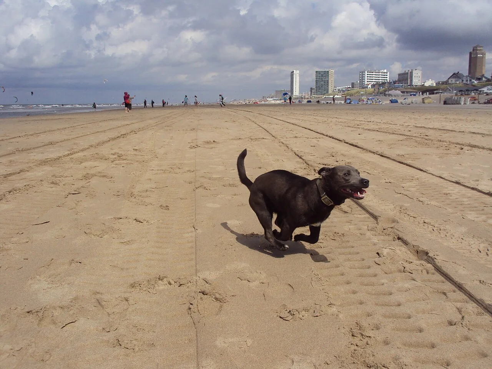
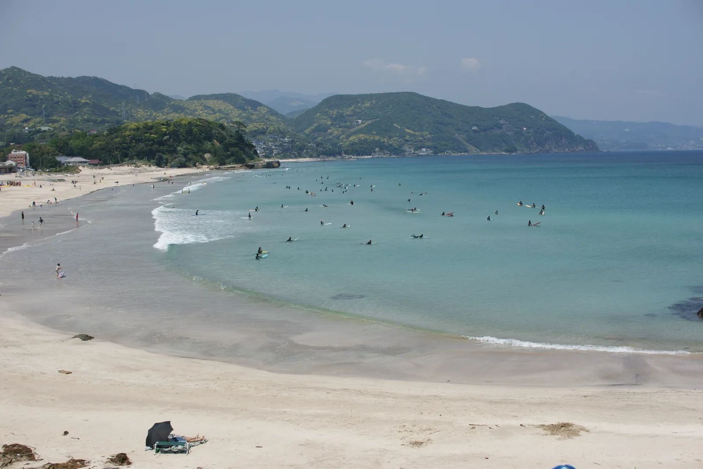

WEEKEND WITH MY DOG.
週末は、
きみと遠出しよう。
海まで走って、カフェでひと休み。
いつもの散歩の、その先へ。
愛犬と行きたい伊豆を見つけよう。
熱海から南伊豆まで。犬の条件も、まとめて確認。

犬との旅のイメージ写真／伊豆での撮影ではありません
あの青い海へ。SHIMODA / 白浜大浜海岸きょうは、何したい？
A LITTLE TRIP IDEA
こんな一日、どう？
行き先から、旅を思い描こう。
3BEFORE YOU GO「犬もOK」の、
「犬もOK」の、
その先を確かめよう。
- 一緒に入れる場所は？店内・テラス・一部エリア
- うちの犬のサイズは？体重・体高・犬種の条件
- 何を持っていく？キャリー・リード・接種証明
同伴条件と確認元は、施設の詳細にまとめています。
FIND YOUR NEXT STOP
次は、どこへ行こう。
情報を読み込めませんでした。再読み込みするか、エリア別ガイドをご利用ください。
位置データがある施設を表示します。位置未登録の施設は一覧から「経路」を開けます。
条件に合う場所が見つかりませんでした。
エリアや犬の条件を少し広げて、もう一度探してみてください。
MORE TRIP IDEAS
犬と楽しむ、伊豆の特集。
広告｜じゃらんnet帰り道を、
帰り道を、
気にしない旅に。
行きたい場所が決まったら、泊まる場所も。
予約サイトではエリア・日程・犬の条件を確認してください。
じゃらんで宿予約 ↗
じゃらんの予約サイトへ移動します。
特定の宿・犬同伴プランへの直接リンクではありません。
犬との旅を、
もっと選びやすく。
「行ける場所」を並べるだけでなく、
愛犬とどう過ごせるか、何を準備するかまで。
伊豆での一日を、ここから探してみてください。